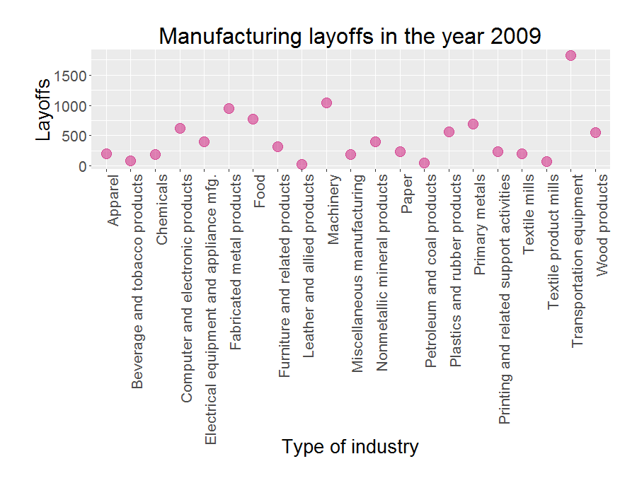

2. US Labor Data
Posted: April 11, 2016; Updated: April 12, 2016
In this project the layoff data from US Bureau of Labor Statistics was analyzed to identify relevant industries, reasons for layoffs, demographics etc. In this data, the event of a mass layoff refers to atleast 50 or more people leaving a company for at least 31 days. The data was downloaded using the data query tool on BLS website. The industry data was from the group 'Industry data from 1995 to present (NAICS)". Here, each set of data is identified by an important parameter called 'series id'.
Source of Data:
Data file in .csv format was downloaded from Mass Layoff Statistics (MLS) and Job Openings and Labor Turnover Survey (JOLTS).
Questions asked:
- Which years during the past decade had the highest layoffs?
- Which industries showed the highest layoffs for these years?
- How does the number of layoffs look across different states in US?
- What year during the past decade had the lowest number of job openings/hiring?
- What were some of the reasosn for layoffs?
- What were the deomographics of layoffs?
Possible answers:
- The year 2009 showed highest number of layoffs reaching 28000. (Figure 1)
- The Manufacturing industry showed highest number of layoffs in 2009 (Figures 2 and 3). And within manufacturing the 'Transportation equipment' segement showed highest layoffs (Figure 4). Further, withing limited availability of data on only four industries from BLS, show that 'Food' industry had highest layoffs in the year 2009 followed by 'Textil mills' (Figures 5 and 6). The 'Food' industry layoffs were highest in the state of California, whereas the 'Texile mills' layoffs were highest in the state of South Carolina (Figure 7).
- The lowest number of job openings appear to be in the year 2009 (Figures 8 and 9)
- The primary reason for layoffs in the year 2009 was 'Business demand' followed by 'Seasonal' demand (Figure 10). Within 'Business demand' the main contributing reasons seem to be slack work, insufficient demand, and non-seasonal business demand. The second reason contributing to layoffs due to business demand was 'Contract completion' (Figure 11).
- During the years 1996 to 2003 the pattern of demographics of layoffs appears to remain fairly constant. Among sexes, a total of more men were laid off as compared to women. Among different age groups, the individuals in age group 30 to 44 were laid off more than any other age group. Interestingly, the individuals under the age of 30 years showed least number of layoffs.
Sample code:
# Function to convert series id into vector....
# This function can be modified to fit a 'series id' of a specific configuration that is determined by length of string, position of characters and element code.
readSeriesID <- function (seriesid){
temp <- 0
count <- 0
for (i in 1:(7+1)){
if(count == 0){
start <- 1
stop <- 2
}else if (count ==2){
start <- 3
stop <- 3
}else if (count == 3){
start <- 4
stop <- 4
}else if (count == 4){
start <- 5
stop <- 7
}else if (count == 5){
start <- 8
stop <- 8
}else if (count == 6){
start <- 9
stop <- 13
}else if (count == 7){
start <- 14
stop <- 16
}
temp <- c(temp, substr(seriesid, start,stop))
count <- count + 1
}
return (temp[2:8])
}
# Function 'to convert series id vector into columns
# States, Industry/Reason/Demographics
indCol <- function(dFrame1, dFrame2, col1, svec, col_num){
dFrame1[,col1] <- as.character(dFrame1[,col1]) #<<< note: using "$" did not work so used "[]"
dFrame2[,col1] <- as.character(dFrame2[,col1])
num1 <- grep(svec[5], dFrame1[,col1]) #use grep to the number location
num2 <- grep(svec[7], dFrame2[,col1])
t1 <- as.character(dFrame1[num1, col_num]) # convert to 'character'
t2 <- as.character(dFrame2[num2, col_num])
t <- list(t1, t2)
return (t)
}
# For loop to create new columns to store data from series id
for (i in 1:nrow(m2_data)){
seriesid <- readSeriesID(as.character(m2_data$Series_ID[i]))
re <- indCol(state_code, industry_code, "Code", seriesid, 2)
m2_data$State[[i]] <- re[[1]]
m2_data$Industry[[i]] <- re[[2]]
}
Figure gallery:

Important ! Data for layoffs within manufacturing for different states was not available for other indudstries within manufacturing. Therefore, further analysis of the 'Transportation and Equipment' segment with highest layoffs was not possible.
Note: In this stacked bar-plot, the y-axis values are rates or percentages. It is the total of all percentage point changes over 12 months. For example in series ID LNS14000000, the percent unemployment rate was Jan: 4.7, Feb: 4.8, Mar: 4.7, Apr: 4.7, May: 4.6, Jun: 4.6, July: 4.7, Aug: 4.7, Sep: 4.5, Oct: 4.4, Nov: 4.5, Dec: 4.4 which adds to a total of 55.3 points.
Note: The data for demographics for the years 2004 to 2015 was not available and therefore not included in this plot.